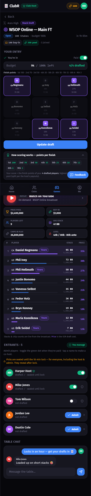
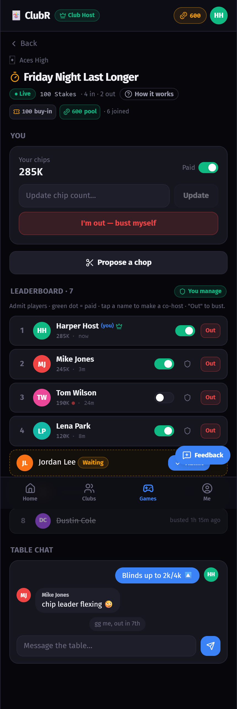
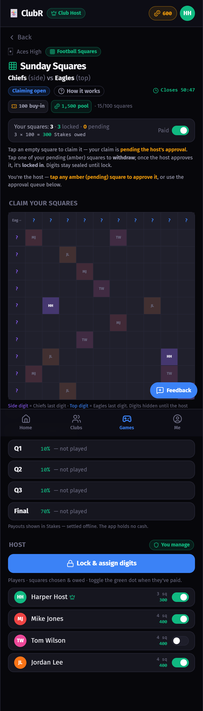

ClubR is a scorekeeper for a poker club's side-games — it tracks and proves the count and the result, but never touches the cash (the club settles up offline). Before you test a game, read its section here so you know what should happen. Never played fantasy or poker pools? That's exactly who this is for.
ClubR runs three side-games for poker clubs. None of them is "playing poker" inside the app — the app is the referee + scoreboard. Here's the one-line version of each, then read the full section before testing it.
A big poker tournament ends with a final table: the last 9 players left, playing for the title. In FT Fantasy you don't play poker — you act like a fantasy-football manager: you "draft" (pick) 4 of those 9 players before the final table plays out. Then you score points based on where each of your 4 players finishes (1st place is worth the most, 9th the least). Whoever's 4 picks score the most points wins the prize pool.
Analogy: It's like a fantasy football draft, except your "team" is 4 poker pros and their "stats" are simply how high they finish at the table.
The finishing order is public and the picks were sealed before lock — so the result can't be rigged and nobody can copy a winning draft. ClubR just proves it.

On the club's own poker night, players add a small side-bet on top of the real game: everyone pays a buy-in into one pool, and the player who survives the longest — i.e. busts out LAST — wins it. It has nothing to do with who wins the actual tournament; it's purely about survival. The app is the live, public scoreboard of who's still in.
Analogy: Last one standing. Like a "who can stay in the pool the longest" bet among friends — ClubR just keeps an honest, public count so nobody can fudge it.
Run on paper/WhatsApp, a dishonest host could hide players and pocket the early-busted buy-ins. ClubR makes the count public and un-hideable — players see the true headcount the whole time.

A 10×10 grid (100 squares) for a football game between two teams. Players claim squares before kickoff. Once the grid is full, each row and each column is secretly assigned a digit 0–9. At the end of each scoring period (Q1, Q2, Q3, Final), you take the last digit of each team's score — those two digits point to one square on the grid, and that square's owner wins that period's payout.
Analogy: A raffle that's decided by the scoreboard. You don't pick numbers — you pick squares; the game's score draws the "winning ticket" each quarter.
The digit assignment is provably fair (a committed random seed → deterministic shuffle), so it can't be rigged, and the grid/claims are public. The scoreboard decides — not the host.

Only start testing a game once the section above makes sense. Then sanity-check these per game.